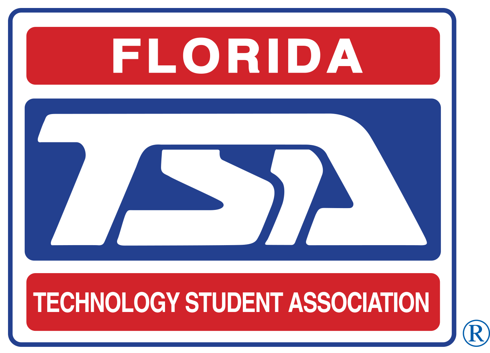

March 18. 2026
TSA Craze
Observer: Aiden
Thomas
Teacher: Eric Baez
Reflections on Classroom Observation
This week, I attended the Technology Student Association competition initially serving as a chaperone and judge for student participants. A challenge I encountered was the unexpected shift in responsibilities when the organizing team found themselves short-staffed during critical competition windows. As a result, I was recruited as a volunteer organizer, commonly referred to as a "red shirt" within the TSA community. I noticed meaningful parallels between my work evaluating student projects and the operational logistics required to facilitate those same competitions. This transition allowed me to witness both sides of the event structure—understanding not only the technical merit of student submissions but also the complex coordination required to ensure fair judging procedures, maintain event schedules, and address real-time challenges that arose throughout the competition day.
Below is the TSA logo

Moving forward, I intend to better anticipate the fluidity of volunteer roles at large-scale student competitions, recognizing that organizational needs can shift rapidly based on attendance, scheduling conflicts, and unforeseen circumstances. The experience reinforced the importance of adaptability when working with youth organizations, as effective support often requires stepping outside initially defined parameters. Comfortability: 7/10. I selected this rating because while I successfully transitioned between roles, I recognize that I need to develop a stronger understanding of TSA's operational frameworks and volunteer management systems to feel fully confident when navigating similar situations in the future.